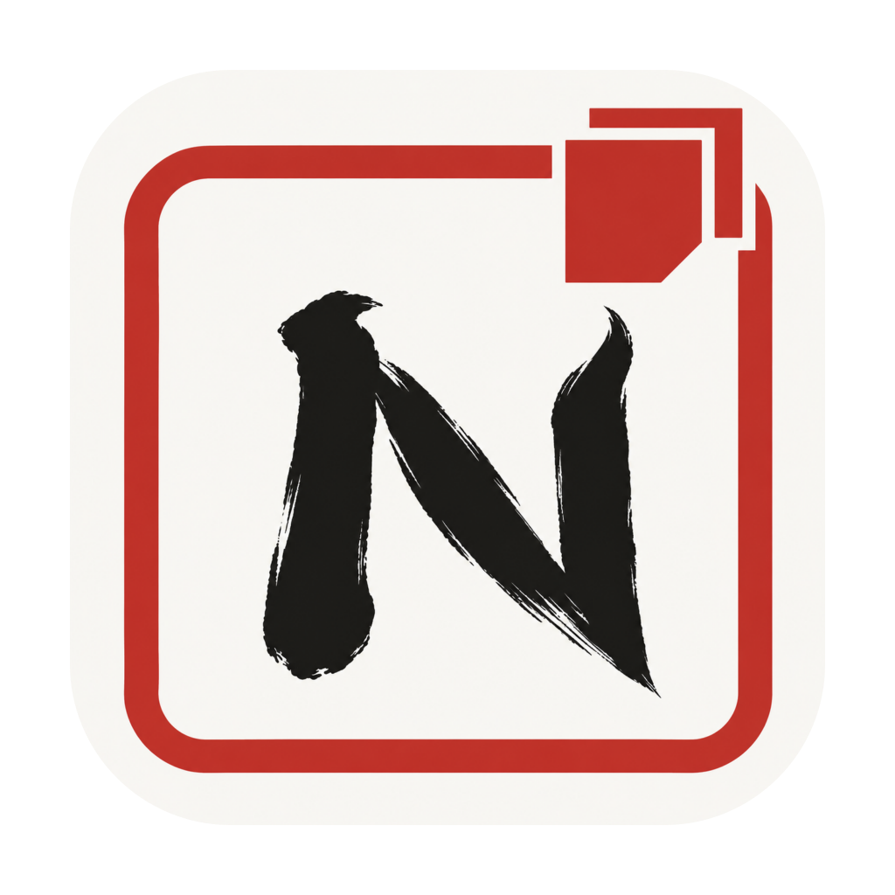

<!doctype html><html lang="zh-CN"><meta charset="utf-8"><meta name="viewport" content="width=device-width,initial-scale=1"><title>Nozeli · 图标 Demo 02</title><link rel="stylesheet" href="./style.css"><main><header><div><a href="../icon-list/">← Demo 01</a><p class="eyebrow">NOZELI / ICON SYSTEM · 02</p><h1 id="heading"></h1><p id="intro"></p></div><nav><button id="language">English</button><button id="theme">深色 / Dark</button></nav></header><section class="brand"><strong>Nozeli</strong><span id="brand-note"></span></section><div id="examples"></div><p id="feedback" role="status" aria-live="polite"></p><section><div class="section-head"><div><h2 id="list-heading"></h2><p id="list-note"></p></div><input id="search" type="search" aria-label="筛选 / Filter"></div><div id="catalog"></div></section><footer><p>Demo only · Lucide / Feather · 24 viewBox · stroke 2 · 18px</p><a href="../../src/renderer/workspace-conversation-controls.LICENSE">ISC / MIT</a><span> · </span><a href="https://github.com/lucide-icons/lucide/tree/main/icons">Official icon source</a></footer></main><dialog id="confirm"><form method="dialog"><h2 id="confirm-title"></h2><p id="confirm-body"></p><p id="confirm-note"></p><div class="dialog-actions"><button value="cancel" id="cancel"></button><button value="confirm" id="proceed"></button></div></form></dialog><script type="module" src="./demo.mjs"></script></html>
